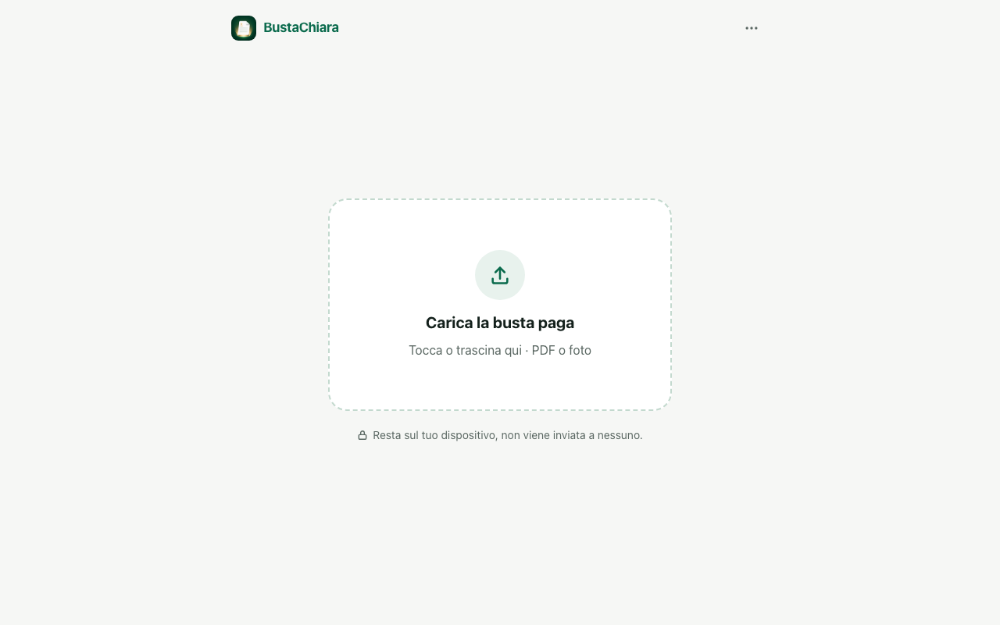
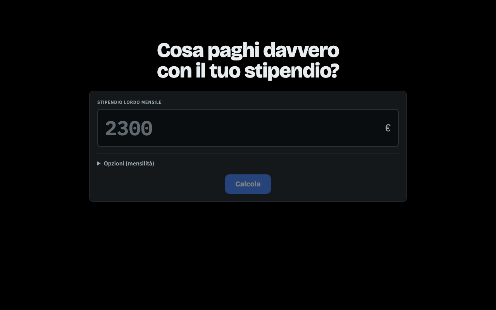
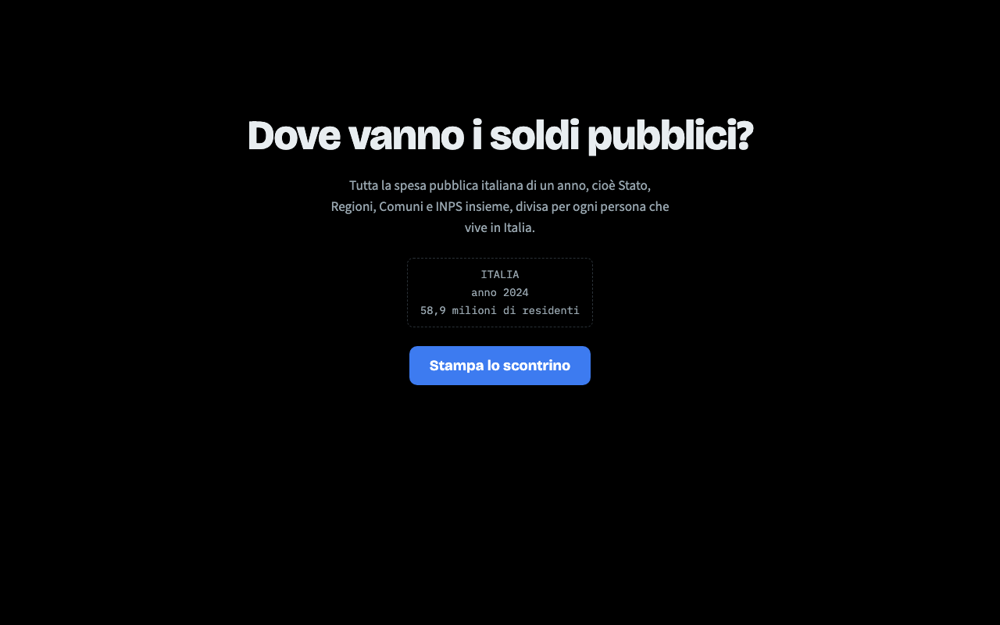
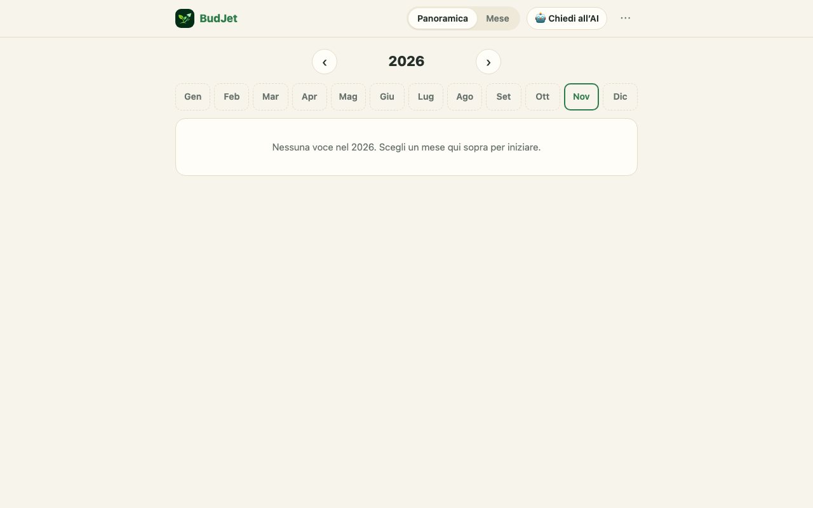
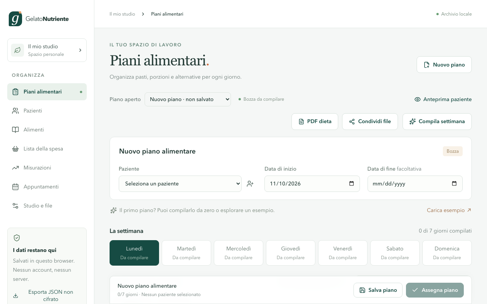
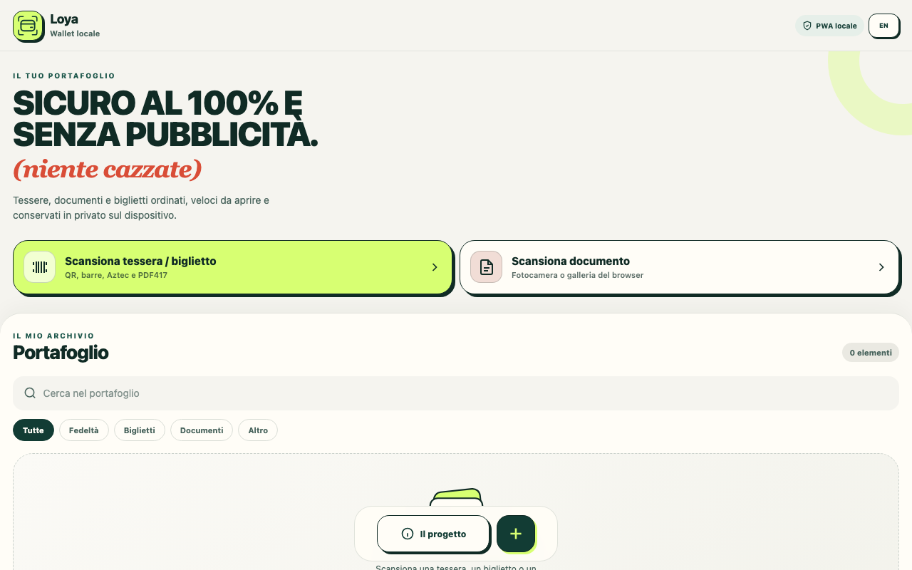

01
BustaChiara
Legge la busta paga e la spiega voce per voce, con i conti in chiaro. Tutto resta sul tuo dispositivo.

Legge la busta paga e la spiega voce per voce, con i conti in chiaro. Tutto resta sul tuo dispositivo.

Dal tuo lordo a quanto vai a pagare di INPS e IRPEF, stampato come uno scontrino.

Quanto spende lo Stato per ogni residente, per l'Italia e per circa 7.900 Comuni. Solo dati ufficiali.

Budget minimale in tre gruppi: essenziali, extra e risparmio. Niente account, niente pubblicità.

Web app per organizzare piani alimentari, con le formule del fabbisogno mostrate passo per passo.

Il portafoglio digitale per carte fedeltà, biglietti e codici. Tutto sul telefono, senza cloud.